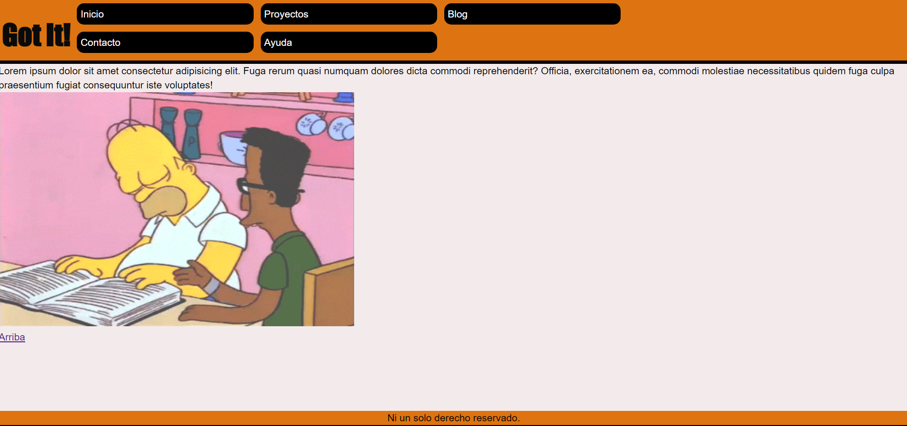

Primera Pre-Entrega del curso
Deberás hacer entrega de tu proyecto donde aparezca: WIRFRAME/PROTOTIPO(wireframe de todas tus páginas para vista mobile + desktop) + HTML(uso de etiquetas contenedoras + etiquetas multimedia + etiquetas de texto) + CSS(con modificadores de texto, colores, listas y box modeling)
 Archivos de la Pre-Entrega 1Gracias a que estoy aplicando todos los desafios en un solo proyecto, no tuve que hacer mucho desarrollo para llegar a una entrega viable